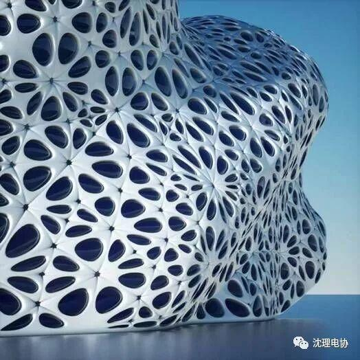
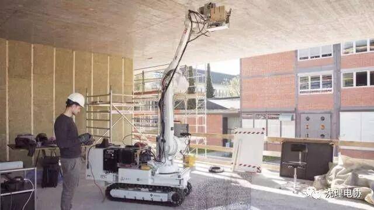
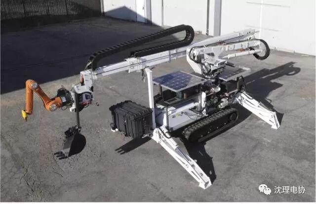
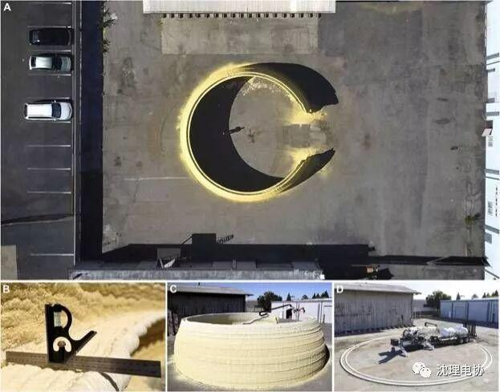
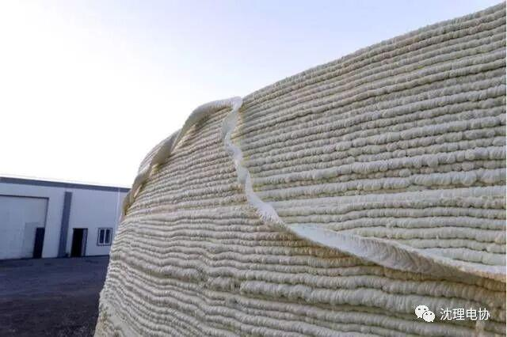
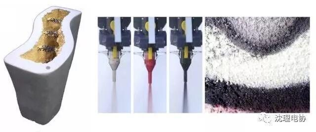
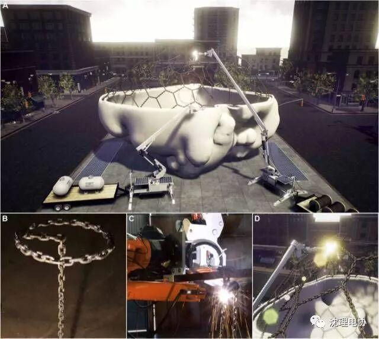

3D打印建筑的机器人，离我们还远吗？
你以为毕业后还能去搬砖？别做梦了，机器人已经连房子都会盖啦！

从设计到施工
在城市发展日新月异，城市建设如火如荼的今天，很多人都在绞尽脑汁地寻找更快更好地盖房子的方法。人们发现，今天我们的建筑设计已经实现了数字化，可以借助电脑软件建立3D模型，全方位立体地设计和展示各种形态的设计方案，但是绝大多数时候，我们的施工方法还停留在传统的按照二维图纸施工的阶段。为了解决这个问题，科学家尝试机器人身上寻找答案。
机器人的“泥瓦匠”和“钢筋工”。
说到盖房子的工人，大家首先想到的肯定是砌砖的工人，也就是俗称的“泥瓦匠”。科学家也设计出了可以完成砌砖工作的“机器人泥瓦匠”。和一般的泥瓦匠不同的是，“机器人泥瓦匠”可以读取3D的房屋设计方案，如果是非常不规则的建筑形体，他还可以根据方案分析和定制每一个特殊形状的砌块，然后把它们完美可靠地安装到位。这种“机器人泥瓦匠”可以比人类更加高效准确地完成建造，还可以应对各种不规则的复杂形体的建筑，让更多看似异想天开的设计成为可能。
有了“泥瓦匠”还不够，目前我们常用的技能建造不规则形态，又能保证结构坚固的建造方式还有钢筋混凝土现浇。但是常规的浇筑需要先搭建模板，不仅不要使用大量的模板，而且不规则形态的模板搭建也是一个难题。这一款叫做In situ Fabricator （简称IF）的“机器人钢筋工”就解决了这个问题。它可以自动弯折、剪切、焊接铁丝，形成一个比较致密的铁丝网结构。这个结构代替了模板，成为混凝土现浇的模具和骨架。因为它比较致密，并且有抗拉的力学性能，所以它既有混凝土模板的作用，也有混凝土里面钢筋的作用，混凝土刚好可以从钢丝网的缝隙处漏出一点点，然后在后期表面处理的时候把钢丝网包裹在里面，可谓一举两得。

把房子3D打印出来
仅仅是让机器人做砌砖和编钢筋的工作还远远不能满足人类的需（ye）求（xin）。既然我们实现了把数字化模型直接打印成实物的3D打印技术，为什么不用这个技术来“打印”房子呢？于是科学家们又倒腾出了一种超大号的3D打印建筑机器人。
这个机器人叫做数字化建造平台（Digital Construction Platform 简称DCP），它带有一个液压驱动的可以自由伸缩和移动的机械臂，可以搭载太阳能光电板，或者使用电源或电池。它的自身体积不大，可以被安装在各种不同的环境和场地中，而且它但是非常灵活，机械臂的工作半径可达10米以上，可以胜任各种复杂形体的建筑建造工作。

它的另一个好处是，可以根据输入的3D模型，自动打印输出，不需要人来控制。想象一下，工人把机器拖到施工现场，安装就位，然后输入今天需要打印的模型，按一下“开始”，就可以回家吃饭啦！等吃完饭，天色渐晚，再回去检查一下成果，“打完收工！”嗯，其实也不一定需要收工，只要有电，人家还可以通宵达旦地工作呢！

为了测试机器，科学家用聚氨酯泡沫打印了一个直径14.6米，高3.7米的拱形结构，只用13.5个小时。液体聚氨酯泡沫从机器臂的前端喷出以后，会迅速膨胀和硬化，是一种很好的“建筑打印”材料。拱形结构的墙体被打印成了中空结构，里面还可以添加钢筋、灌注混凝土，使之成为一个坚固的、永久性的建筑结构。即使在不灌注混凝土的情况下，墙体也已经有了一定的强度，足以承载一个成年人站在上面。而聚氨酯泡沫也可以起到很好的保温隔热作用。


机器人又一次让人类丢了工作？
那么，这么厉害的盖房机器人，会不会又抢了人类的工作？其实我们日常生活中的大多数房屋并不需要这样的机器人来建造，使用常规的建造技术足矣。目前这样的建筑机器人还有许多局限性，比如这台数字化建造平台的工作效果，就会受到天气的影响。在空气湿度太大导致结露以后，打印材料会发生粘接不牢而脱落的现象。而且一台机器244,500美元（折合人民币约168万）的造价也并不便宜。虽然科学家经过计算，得出了机器人盖房子比较便宜的结论，但是注意，他们是在人工费比较高昂的西方发达国家，换到人工费低廉的发展中国家，帐就不能这么算了……
这样的建筑机器人的优势在于，一方面可以实现比较复杂扭曲的建筑形体的精确和快速建造，比较好的完成设计师原本的设计理念。另一方面可以进入一些比较危险或者人类无法到达的地区进行建造，只要有太阳，它们就可以工作，而且使用清洁能源，有益于节能减排。
科学家已经设想了几种将来有可能的建筑机器人工作场景。说不定在不久的将来，机器人会把房子盖到火星上去呢！

未来的工作场景1：数字化建造平台和“机器人钢筋工”的完美合作。
未来的工作场景2：数字化建造平台在寒冷地区“打印”冰屋。
未来的工作场景3：用沙子做原料打印分形结构，以便沉入海中帮助珊瑚礁的生长。
这些设想里面我最喜欢的第三个，它向我们传达了一种信息：机器人不仅可以帮人类盖房子，也可以帮珊瑚虫盖房子。也许将来机器人还会在更多领域走入我们的生活，希望不管是机器人的设计者还是使用者都能明白，使用机器的目的是帮助我们完成高难度但是很有必要的工作，帮助我们减轻人类活动对环境造成的负面影响，帮助我们实现更多创造性的工作，让不同阶层的人更体面更有尊严地生活，保护我们免于危险，激发我们的人性和爱。如果不是这样，我宁愿步子走得慢一点，再花点时间想一想。
说到底，技术这把双刃剑，总是掌握在人类这个还很不成熟的孩子手中啊！
作者：万丽
链接：https://www.guokr.com/article/442481/
来源：果壳网
编辑| 刘聪